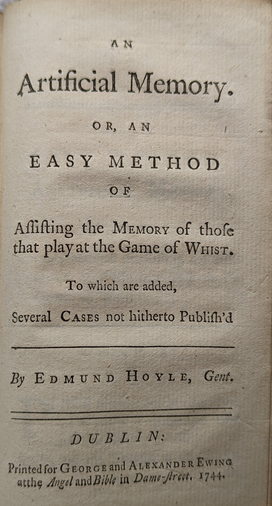

A Descriptive Bibliography of Edmond Hoyle
Copyright © 2014-26 by David Levy
(page updated 2026-01-30)User Guide
Memory.D.1
An Artificial Memory at the Game of Whist, printed for George and Alexander Ewing, first Dublin edition, 1744.
 |
Title: |
AN | Artificial Memory. | OR, AN | EASY METHOD | OF |
Aſſiſting the Memory of thoſe | that play at the Game of Whist. | To which are added, | Several Cases not hitherto Publiſh'd. | [rule] | By Edmund Hoyle, Gent. | [double rule] | DUBLIN: | Printed for George and Alexander Ewing | at the Angel and Bible in Dame-ſtreet. 1744. |
| Collation: |
12o: A8 B4 [$½ (−A2) signed]; 12 leaves, pp. [1–4] 5–21 [22–24] |
| Half Title: |
[rule] | AN | Artificial Memory. | [rule] |
| Contents: |
Signature (Page) Reference |
Contents |
Signature (Page) Reference |
Running Titles |
| A1r (1) |
half title |
|
|
| A1v (2) |
advertisement for Whist.D.3 |
|
|
| A2r (3) |
title |
|
|
| A2v (4) |
blank |
|
|
| A3r–B3r (5–21) |
‘[double rule] | AN | Artificial Memory, | OR | An eaſy Method of aſſiſting the Me-|mory of thoſe that play at the | Game of Whist. | [...]’ |
A3v–B3r (6–21) |
‘A Treatiſe on Whist.’ |
| B3v–B4v (22–24) |
catalogue of books printed for George and Alexander
Ewing |
B4r–B4v (23–24) |
‘CATALOGUE, &c.’ |
| Catchwords: |
A6r(11) IV. Let [III. Let] |
| Publisher: |
George and Alexander Ewing |
| Notices: |
1744-03-31 The Dublin Journal: "This day is published, price 3d." |
| Price: |
3d. (title, advertisement) |
| References: |
ESTC T88039, Jessel 788, Marshall s7 no.8 p263 (1889-10-05), Rather 17 |
| Copies Seen in Collections: |
L [7917 de.73] (ECCO splits Ewing.B into two files, one which contains Memory.D.1 and
the other which contains everything else.) (see Ewing.B); O [Jessel f.541(2)] (see Ewing.A); O [Jessel f.570(5)] (see Ewing.B); O [Jessel f.571(5)] (see Ewing.B); NvLN [GV1201.H83 1743] (see Ewing.A); Levy [1609] (see Ewing.B) |
| Other Copies in Collections: |
C [Hib.7.745.29] (see Ewing.B); CaOTP [795 H598] (see Ewing.B); ICD [SPC. 795 H868P] (see Ewing.B); LU [GV1243.H7] (see Ewing.A); WaS [R795 H852P] (see Ewing.B); AuNU [RB 4645.44] (see Ewing.B) |
Home